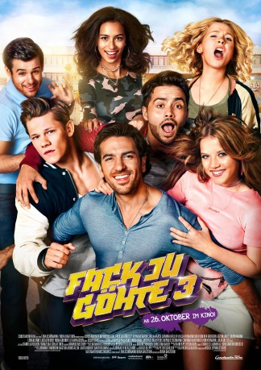

IMDB-Wertung: 5.4 / 10
IMDB-Wertung: 5.4 / 10  Metascore:
Metascore: 
A bank robber becomes a teacher after being released from prison and finds himself at the center of a number of crazy adventures.
 gesehen am 20.03.2018
gesehen am 20.03.2018 IMDB-Wertung: 5.4 / 10 Metascore:
A bank robber becomes a teacher after being released from prison and finds himself at the center of a number of crazy adventures.
Jahr: 2017
Dauer: 119 Minuten
FSK: 12
Land: Deutschland Studio: Constantin FilmTonspuren:
Untertitel: Deutsch,
Auflösung: 1080p (1920x808) Größe: 7270 MB
Genre: Komödie
Regisseur: Bora Dagtekin
Drehbuch: Bora Dagtekin
Soundtrack: Konstantin Djorkaeff Scherer, Vincent Stein
Darsteller:
 Elyas M'Barek als Zeki Müller
Elyas M'Barek als Zeki Müller Katja Riemann als Gudrun Gerster
Katja Riemann als Gudrun Gerster Jella Haase als Chantal
Jella Haase als Chantal Uschi Glas als Ingrid Leimbach-Knorr
Uschi Glas als Ingrid Leimbach-Knorr Lucas Reiber als Etienne (Ploppi)
Lucas Reiber als Etienne (Ploppi) Tristan Göbel als Schütte
Tristan Göbel als Schütte Michael Maertens als Eckhart Badebrecht
Michael Maertens als Eckhart Badebrecht Lea van Acken als Amrei Keiser
Lea van Acken als Amrei Keiser Julia Dietze als Angelika Wiechert
Julia Dietze als Angelika Wiechert Corinna Harfouch als Kerstin
Corinna Harfouch als Kerstin Irm Hermann als Ploppis Oma
Irm Hermann als Ploppis Oma Jana Pallaske als Charlie
Jana Pallaske als CharlieDatei: X:\3-Trilogie(A-F)\Fack Ju Göhte\Fack ju Göhte 3 (2017, FSK12, 1920x808).mkv seit 19.03.2018
Festplatte: HD Collection-2(A-Z)-3(A-M)
 Alle Filme aus Gruppe '3-Trilogie(A-F)\Fack Ju Göhte'
Alle Filme aus Gruppe '3-Trilogie(A-F)\Fack Ju Göhte'